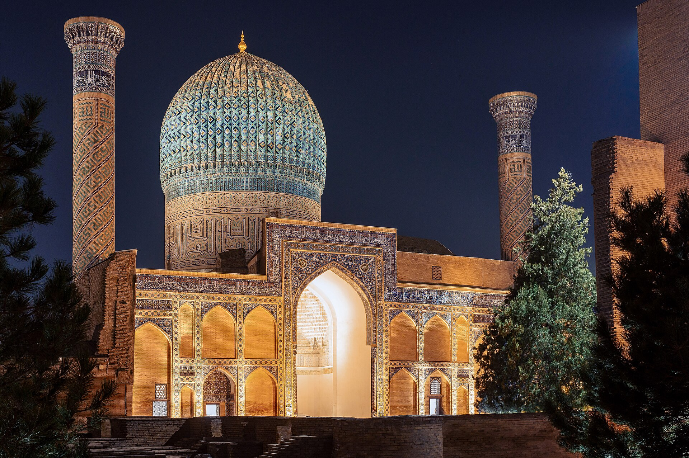

FIDE prezidenti Samarqandda saylanadi: uchta nomzod juftligi va ~200 federatsiya ovozi
Ovoz berish 26-sentabrda, 46-Jahon shaxmat olimpiadasi doirasidagi FIDE Bosh assambleyasida o‘tadi. Amaldagi prezident Arkadiy Dvorkovich iyulda YeI sanksiyalaridan keyin vakolatlarini to‘xtatgan.

2026-yil 26-sentabr kuni Samarqandda Xalqaro shaxmat federatsiyasi (FIDE) Bosh assambleyasi yangi prezidentni saylaydi. Ovoz berish 46-Jahon shaxmat olimpiadasi doirasida o‘tkazilayotgan 97-FIDE Kongressi (19–28-sentabr) tarkibida bo‘lib o‘tadi.
Ovoz berishda har bir a’zo milliy federatsiya bitta ovozga ega. FIDE tarkibida taxminan 200 ta federatsiya bor.
Uchta nomzod juftligi
FIDE ma’lumotiga ko‘ra, saylovga uchta prezidentlik juftligi ro‘yxatdan o‘tgan:

- Yan Henrik Byuttner — vitse-prezidentlikka nomzod Malkolm Peyn
- Vadim Rozenshteyn — vitse-prezidentlikka nomzod Gordon Tang
- Timur Turlov — vitse-prezidentlikka nomzod Vishvanatan Anand
Timur Turlov — Freedom Holding Corp asoschisi va bosh direktori, shuningdek Qozog‘iston shaxmat federatsiyasi rahbari. Vadim Rozenshteyn Germaniya shaxmat federatsiyasi delegati hisoblanadi. Yan Henrik Byuttner — telekommunikatsiya, internet-texnologiyalar va venchur investitsiyalar sohasida faoliyat yuritgan tadbirkor.
9-sentabr kuni Chess.com platformasida uch nomzod ishtirokida prezidentlik debati o‘tkazildi.
Nega yangi prezident saylanmoqda
Amaldagi FIDE prezidenti Arkadiy Dvorkovich 2026-yil iyul oyida Yevropa Ittifoqining Rossiyaga qarshi 21-sanksiyalar to‘plamiga kiritildi. Shundan so‘ng u vakolatlari va vazifalarini o‘z ixtiyori bilan to‘xtatib turishini e’lon qildi.
Dvorkovich o‘z bayonotida qarorni «g‘ayriqonuniy va adolatsiz» deb baholadi va uni barcha mumkin bo‘lgan vositalar bilan da’vo qilishini bildirdi.
FIDE nizomiga ko‘ra, prezident vazifasini vitse-prezident bajaradi. Shu tariqa Vishvanatan Anand — 15-jahon chempioni va 2022-yildan FIDE vitse-prezidenti — tashkilotning vaqtinchalik prezidenti bo‘ldi.
Anand 15-sentabr kuni Samarqanddagi olimpiada ochilish marosimida vaqtinchalik prezident sifatida nutq so‘zladi. Marosimning rasmiy qismini O‘zbekiston Bosh vaziri Abdulla Oripov ochib berdi va Prezident Shavkat Mirziyoyevning ishtirokchilarga yo‘llagan murojaatini o‘qib eshittirdi.
Turlovning dasturi
The Times of Central Asia nashriga bergan izohida Turlov shaxmatni maktab ta’limiga kiritish tajribasini kengaytirishni rejalashtirayotganini aytdi.
Men shaxmat chinakam global hodisaga aylanishini ko‘rmoqchiman.
— Timur Turlov, FIDE prezidentligiga nomzod, Qozog‘iston shaxmat federatsiyasi rahbari (The Times of Central Asia tarjimasidan, 17.09.2026)
Nashr ma’lumotiga ko‘ra, Qozog‘istonda joriy o‘quv yilida shaxmat 1 500 ta maktabda o‘quv predmeti sifatida o‘qitilmoqda; kelgusi yilda bu ko‘rsatkichni 2 500 taga yetkazish rejalashtirilgan. Mamlakatdagi «Senat ochiq chempionati»da 5 000 dan ortiq ishtirokchi qatnashgan.
Shaxmat — bu odamlar munosabatlarni rivojlantirishi va fazilatda o‘sishi mumkin bo‘lgan yo‘llardan biri.
— Timur Turlov, FIDE prezidentligiga nomzod (The Times of Central Asia tarjimasidan, 17.09.2026)
Raqamlarda
- Saylov sanasi: 26-sentabr 2026, Samarqand
- FIDE 97-Kongressi: 19–28-sentabr 2026
- Ovoz beruvchi federatsiyalar: taxminan 200 ta (har biriga bitta ovoz)
- Nomzod juftliklari: 3 ta
- Prezidentlik debati: 9-sentabr 2026 (Chess.com)
- Dvorkovich vakolatini to‘xtatgan sana: 2026-yil iyul
- Olimpiada: 15–27-sentabr 2026, 400 jamoa, 1 980 shaxmatchi
Olimpiada foni
Saylov o‘tkazilayotgan 46-Jahon shaxmat olimpiadasi 15–27-sentabr kunlari Samarqandda, «Silk Road Samarkand» xalqaro ko‘rgazma markazida o‘tkazilmoqda. FIDE ma’lumotiga ko‘ra, musobaqada 400 ta jamoa ishtirok etmoqda: ochiq turnirda 208 ta, ayollar turnirida 192 ta.
Bu — olimpiada tarixidagi eng yuqori ko‘rsatkich; oldingi rekord 2024-yilda Budapeshtda qayd etilgan 380 ta jamoa edi. Imkoniyati cheklangan shaxmatchilar olimpiadasida esa 41 ta jamoa qatnashmoqda.
Ochiq turnirda AQSh terma jamoasi o‘rtacha 2753 reyting bilan birinchi favorit, Hindiston 2735 bilan ikkinchi, O‘zbekiston 2720 bilan uchinchi o‘rinda joylashgan. Musobaqa Shveytsariya tizimi bo‘yicha 11 turda o‘tkaziladi.
Saylov tartibi
FIDE prezidenti to‘rt yilga saylanadi. Nomzodlar «juftlik» (ticket) tarzida ro‘yxatdan o‘tadi: prezidentlikka nomzod o‘z vitse-prezidenti va boshqaruv kengashi tarkibini oldindan e’lon qiladi.
Ovoz berish Bosh assambleyada o‘tkaziladi. Natijalar 26-sentabrdan keyin ma’lum bo‘ladi; yangi boshqaruv kengashi ham o‘sha kuni shakllantiriladi.